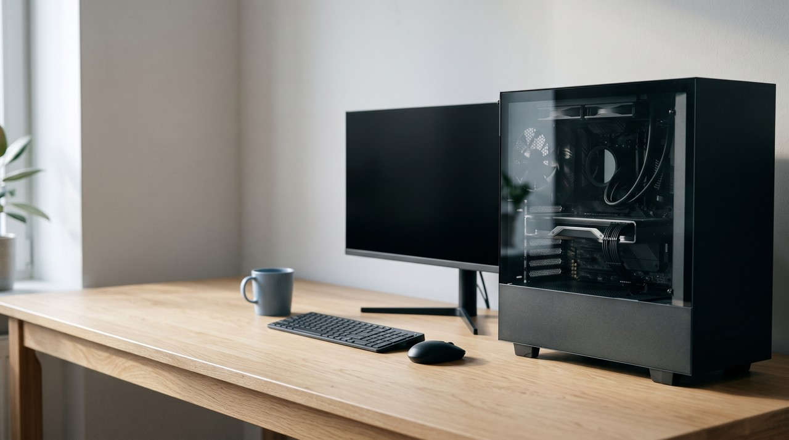

How to install GPT-SoVITS on Windows: which file to download, the steps, and where people get stuck

To install GPT-SoVITS on Windows, you download the integrated package from the project's Hugging Face page, and this is a 7z archive of about 8 to 11 GB. You extract it with 7-Zip into a short folder and double click go-webui.bat, and then the WebUI opens in your browser. This way needs no Python setup. I strongly recommend an NVIDIA graphics card, and training your own voice is a separate set of steps inside the WebUI.
| Integrated Windows package | Manual install with conda | VoiceClone | |
|---|---|---|---|
| What you download | One 7z archive, about 8 to 11 GB | The source code, then Python packages and models | One zip, then a 1.3 GB engine download on first run |
| Python setup | None, it is bundled | You create the environment yourself | None |
| How it starts | Double click go-webui.bat | Run webui.py from the environment | Double click START VoiceClone.bat |
| Languages | English, Japanese, Korean, Cantonese, Chinese | The same | English only |
| Cost | Free, MIT license | Free, MIT license | One voice cloned and trained free, then $49 once |
| Best for | Most people who want the raw engine | Developers who want to change the code | People who want their voice working tonight |
Written by Inam. I build VoiceClone on top of GPT-SoVITS, so I know this engine well, and I am not neutral about the last column. My other engineering notes are on designesh.com. Last updated 8 October 2026.
You want GPT-SoVITS running on your own Windows PC because you heard it can clone a voice from about a minute of audio. But you open the GitHub page and see a wall of version names, model folders and commands. Windows has the easiest way of all. The project ships a ready made package with Python and the models already inside.
You just download the package, extract it with 7-Zip, and double click go-webui.bat. That is the whole install for most people. The real work starts after that when you train your own voice.
What do you need before you install GPT-SoVITS?
You need a Windows PC with plenty of free disk space first. The package is a single archive of about 8 to 11 GB depending on the version. It gets bigger once it is extracted, so plan for well over 20 GB free before you start. A fast SSD helps because the models load from disk every time you open it.
You also want an NVIDIA graphics card, if you have one. GPT-SoVITS runs its heavy maths through CUDA. This is NVIDIA's system for running calculations on the graphics card instead of the processor. The community English guide recommends an NVIDIA card with 6 GB of video memory or more. I did my own training runs on a 4 GB laptop card, and a full run took about 145 minutes. The software still runs on the processor without a supported card, but it is just much slower.
You also need 7-Zip. This is the free program that opens .7z archives. Windows can open zip files on its own. But these packages are .7z and they are large, so 7-Zip is the reliable way to extract them.
Which GPT-SoVITS package should you download?
Most people get confused here because the project has shipped many versions and they all sit in one download folder on Hugging Face. The names tell you the version and the build date. V2 added Korean and Cantonese, and V3 and V4 improved how closely the clone matches the voice. The README says V2Pro performs above V4 while needing only the hardware V2 needed.
I checked that folder on 8 October 2026, and the newest file was GPT-SoVITS-v5-20261005.7z at 10.9 GB. There was also a separate build for RTX 50 series cards at 10.6 GB, and it had been uploaded that same day. The Releases page on GitHub still showed the V2Pro package from June 2025 as its latest release at 8.19 GB. The link inside the README still points to an older V3 package. So these three official places give three different answers.
This is how I would choose:
- Take GPT-SoVITS-v2pro-20250604.7z if you want the build that has been in people's hands the longest. This is the one the Releases page calls latest.
- Take the V5 package if you want the newest engine and do not mind being early. Brand new builds sometimes get a quick fix release in their first days. So check the folder again before you download.
- Take the file with nvidia50 in its name if your card is an RTX 50 series. Those cards need the newer CUDA build, and the normal package is not made for them.
Download the V2Pro package if you are not sure, and take the version with nvidia50 in the name if your card is an RTX 50 series.
How do you install the GPT-SoVITS Windows package, step by step?
- Download your chosen .7z file from the Hugging Face folder. This takes a while at around 8 to 11 GB, so do it on a stable connection.
- Right click the file and use 7-Zip to extract it. Extract the whole folder and not single files out of it.
- Put the extracted folder somewhere short and simple like
D:\GPT-SoVITS. This is the same example path the project's own README uses. Avoid long paths with spaces or non-English characters because Python tools on Windows can trip over them. - Open the folder and double click go-webui.bat. A black console window opens and starts loading. Leave it open the whole time because closing it closes GPT-SoVITS.
- Your browser opens the WebUI after a short wait. This is a control panel that runs on your own PC and only looks like a website. The console window prints the local address to open if the browser does not open by itself.
That is the whole install. Nothing was uploaded and no account was made because the whole thing runs locally.
Can you install GPT-SoVITS without the package?
You can install it manually, and developers often prefer it because it keeps the code up to date with the GitHub repository. The GPT-SoVITS README gives the Windows commands. You create a conda environment first. This is an isolated box for one Python project. Then you run the install script:
conda create -n GPTSoVits python=3.10conda activate GPTSoVitspwsh -F install.ps1 --Device CU128 --Source HF --DownloadUVR5
The --Device option picks CU126 or CU128 for NVIDIA cards, or CPU, and --Source picks where the models download from. On this route you also put ffmpeg.exe and ffprobe.exe in the GPT-SoVITS folder yourself, and the README asks for the Visual Studio 2017 redistributable. Then you start it with python webui.py. If none of those words mean anything to you, that is fine, the package route above does all of this for you.
How do you train your own voice in the GPT-SoVITS WebUI?
Installing it gives you the engine with its base models. You prepare your recordings and fine tune it to make it sound like you. This means training it a little more on one voice. The community English guide on rentry.co walks through each tab. It was written around V2, so some labels may differ on newer builds. The order is like this:
- Prepare the audio. The guide asks for 1 to 30 minutes of your voice, and it says quality beats quantity. You cut out music, singing and muffled parts.
- Slice it. The audio slicer cuts your recording into short clips that the trainer can handle.
- Transcribe it. This is the ASR step, which means automatic speech recognition. It writes down what you said in each clip. It uses Faster Whisper large v3 for English, and the result is a .list file with one line per clip.
- Proofread it. You open the labelling tool and fix any wrong words. A wrong transcript teaches the model the wrong sounds.
- Format the dataset in tab 1A. You give your model a name, point it at the .list file and run the one click formatting.
- Train it in tab 1B. First is the SoVITS part, which learns the sound of your voice. Then is the GPT part, which learns your rhythm and delivery. The guide suggests batch size 2, or 1 on a 6 GB card. It suggests 8 epochs for SoVITS and 10 for GPT. An epoch is one full pass over your clips.
- Use it in tab 1C. Pick your trained models and give a reference clip of 3 to 10 seconds plus the exact words spoken in it. Then type your text and press start.
You might want to understand why the engine has these two halves. I wrote about it in GPT-SoVITS in plain words.
Where do people get stuck with GPT-SoVITS on Windows?
Most problems come down to a few simple things. The engine being broken is not one of them.
- The wrong package for the card. You might have an RTX 50 series card on the normal package, or the other way round. You should match the file name to your card.
- Running out of video memory. You should drop the batch size to 1 if training stops with an out of memory error. The guide also says you should not train SoVITS and GPT at the same time unless you have two graphics cards.
- A reference clip that is too long. The reference must be 3 to 10 seconds in tab 1C. A longer clip gets refused, and a clip with the wrong reference text gives strange results.
- Closing the black window. That window is the engine. You close it, and the WebUI in your browser stops answering.
- A hot laptop. The guide warns that training pushes the processor and graphics card to full load at the same time. You should raise the laptop, keep the vents clear and not train it on a bed.
When is it easier to skip the install?
The raw engine is a great weekend if you enjoy this kind of setup. It is free, and it speaks five languages. It is the engine I chose for my own product, and I mean that. But you are the reason VoiceClone exists if the steps above feel like a second job.
VoiceClone is a Windows app for Windows 10 and 11 with GPT-SoVITS inside. You unzip it and double click START VoiceClone.bat. The first run downloads the engine, and this is about 1.3 GB, which takes 10 to 30 minutes one time. You record 1 to 3 minutes of yourself, and it checks the recording before cloning. The Make it perfect button trains your voice on your PC. Training is much faster on an NVIDIA card, and it still works on a PC without one, but it is just slower.
These are the honest limits. It speaks English only, and it does not sing. The free version lets you clone and fully train one voice and generate 3 times to hear it. The $49 one time license opens unlimited length, the word editor, retraining and exports after that. There is no subscription, and you can get it from the download page.
FAQ
Is GPT-SoVITS free to use on Windows?
Yes, it is free. GPT-SoVITS is open source under the MIT license, and the Windows package is a free download from the project's Hugging Face page. You pay nothing, but you need a strong enough PC and the patience to train it yourself.
Do I need Python to install GPT-SoVITS?
You do not need Python if you use the integrated Windows package. Python and the models are already inside it. You only set up Python yourself on the manual conda route, and this is mostly for developers.
Which GPT-SoVITS version should I download?
The GitHub Releases page calls the V2Pro package its latest, and it is the safe choice. A V5 package appeared in the download folder on 8 October 2026 for people who want the newest engine. Your card needs the file with nvidia50 in its name if it is an RTX 50 series.
Can GPT-SoVITS run without an NVIDIA graphics card?
It can run on the processor, but it is much slower. This is especially true for training. The community guide recommends an NVIDIA card with 6 GB of video memory or more for training at home.
Sources: the GPT-SoVITS README and Releases page on GitHub, the GPT-SoVITS Windows package folder on Hugging Face, read on 8 October 2026, the community GPT-SoVITS guide on rentry.co, the 7-Zip website, and the VoiceClone product page on myvoiceclones.com.
Hear your own voice come back.
The free Windows app clones and fully trains one voice, yours, on your own PC. No account, no upload, and the download starts right away.